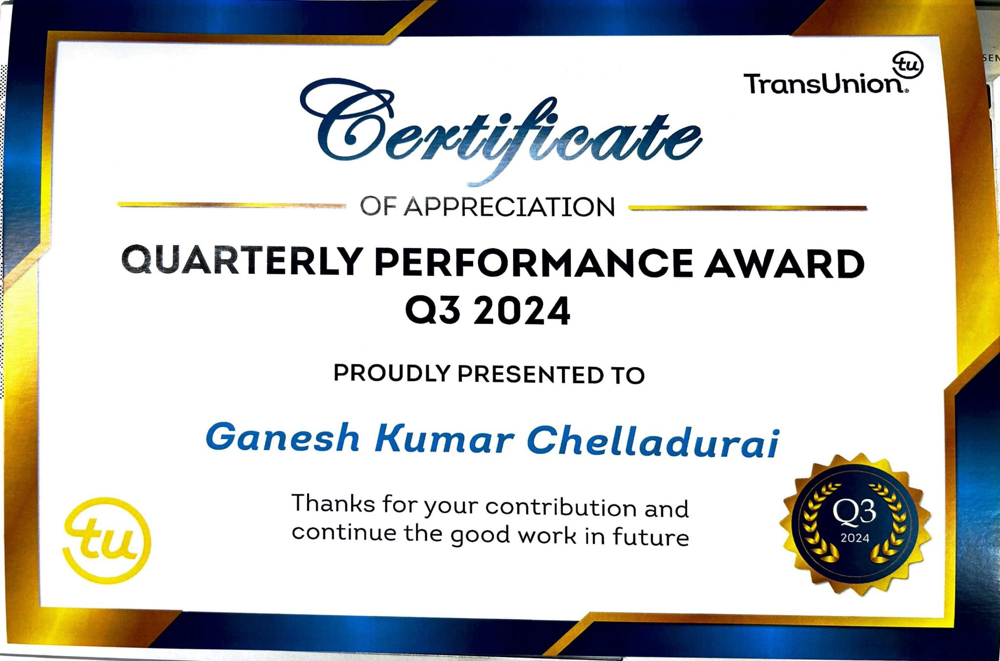

Ganeshkumar Chelladurai's Portfolio
Senior QA Engineer | SDET | Test Automation Specialist | MEng (IoT)
Building scalable, reliable, and intelligent test automation for modern systems.
Download CV
About Me

I am a Senior QA Engineer and SDET with over 9 years of experience delivering high-quality, scalable software across diverse domains. My expertise spans UI automation, API testing, performance engineering, and backend/ETL validation, with a strong focus on building robust automation frameworks that integrate seamlessly into CI/CD pipelines.
Over the years, I have worked closely with developers, architects, and product teams to ensure reliability at every layer of the system. This hands-on industry experience motivated me to deepen my technical foundation beyond testing and move into data-driven and connected systems.
Currently, I am pursuing a Master of Engineering in Electronic & Computer Engineering (IoT) at Dublin City University. My goal is to bridge quality engineering with data analysis, machine learning, and IoT security—combining practical QA expertise with advanced engineering knowledge to contribute to next-generation, intelligent software systems.
Skills & Tech Stack

UI Automation
- Tools: Selenium, Cypress, Appium
- Frameworks: TestNG, Page Object Model (POM), BDD (Cucumber)
- Use Cases: Cross-browser testing, mobile automation, responsive UI validation
API Testing & Automation
- Tools: Postman, SoapUI, REST Assured
- Frameworks: REST Assured + TestNG
- Use Cases: Contract testing, API chaining, JSON/XML validation
Performance Testing
- Tool: Apache JMeter
- Integration: Jenkins CI
- Use Cases: Load testing, stress testing, scalability and bottleneck analysis
ETL / Backend Testing
- Tools: Ab Initio, Express>IT, SQL
- Frameworks: Custom SQL-based ETL validation frameworks
- Use Cases: Source-to-target validation, data pipeline testing, shell scripting
Cloud & DevOps
- Cloud: AWS (Cloud Practitioner)
- CI/CD: Jenkins, Git
- Use Cases: Test automation pipelines, scheduled regression, reporting
Projects / Case Studies

Scalable Selenium + Cypress Hybrid Framework
Problem: Manual regression was slow and error-prone for a complex web application.
Tech Stack: Selenium, Cypress, TestNG, Jenkins CI
Role: Designed and implemented a hybrid automation framework integrating Selenium and Cypress.
Result: Reduced regression execution time by 60% and increased test coverage across UI layers.
REST Assured API Automation with Contract Testing
Problem: API endpoints lacked automated validation, causing frequent integration defects.
Tech Stack: REST Assured, TestNG, Postman
Role: Developed API test automation suite with contract validation and JSON/XML assertions.
Result: Identified critical API bugs early and improved integration reliability by 40%.
JMeter Performance Suite Integrated with Jenkins
Problem: System performance under load was inconsistent and hard to measure.
Tech Stack: JMeter, Jenkins CI
Role: Built automated performance test pipelines integrated with CI/CD.
Result: Enabled continuous load testing and proactive performance monitoring before releases.
ETL Data Validation Framework
Problem: Data inconsistencies between source and target caused reporting errors.
Tech Stack: SQL, Shell Scripting, Ab Initio
Role: Designed automated ETL validation framework with source-to-target mapping checks.
Result: Reduced manual ETL validation effort by 70% and ensured data integrity across pipelines.
Academic IoT Project: Sensor Data + ML Analysis
Problem: IoT sensor data needed predictive insights for decision-making.
Tech Stack: IoT Sensors, Python, Machine Learning, Pandas, Matplotlib
Role: Collected, cleaned, and analyzed sensor data; built predictive models to detect anomalies.
Result: Achieved 85% prediction accuracy and created a reusable data pipeline for future experiments.
Certifications & Achievements
ISTQB Certified Tester – Foundation Level (CTFL v4.0)

Recognized for foundational expertise in software testing principles, techniques, and best practices.
AWS Certified Cloud Practitioner

Validated understanding of cloud concepts, AWS services, security, and architecture best practices.
Internal Awards & Recognitions

Awarded for excellence in automation framework design and contribution to QA process improvements.
Contact Me
Ph: +353-0894469648
Email: ganeshkumar.chelladurai.sdet@gmail.com
Address:
Sandyford Business Park,
Dublin 18,
Ireland.